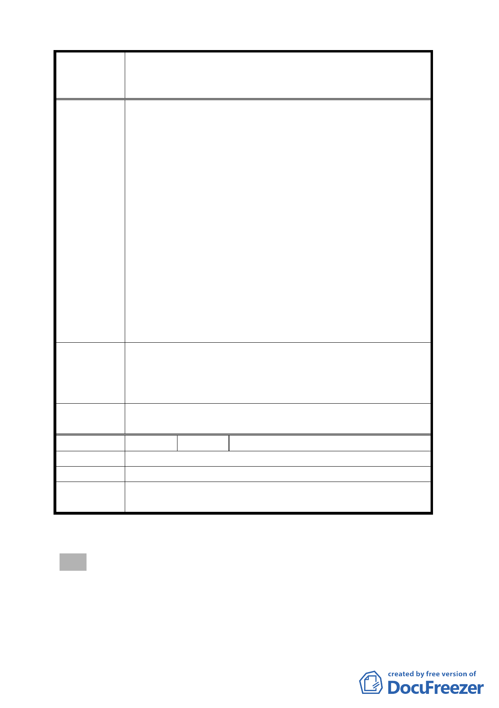

案名
建議辦法
委員會
決議
編號
陳情理由
建議辦法
委員會
決議
變更臺北市華光社區暨週邊地區住宅區、電信用地、郵
政用地及變電所用地土地為商業區、數位科技專用區及
金融服務專用區主要計畫案
（1）都市更新實為贊成之政策。
（2）都市更新創造 1000 億之財富。
（3）既創造 1000 億之財富，對現住戶之照顧從寬從優，
政府照顧國民應付之責任。
3.法律不溯及既往及信賴保護原則之適用。
現住戶既依舊規定配住，服務機關又怠惰職務，形成
信賴關係，故不應依現行規定處理，應依舊規定之眷
舍處理辦法處理。
4.臺北市處理公有土地成功與不成案例。
（1）大安公園及理教公所兩案為雙贏案例，政府既達
更新目的，現住戶亦獲得安居。
（2）14、15 號公園公權力強制，造成貽笑新聞。
（3）世界各國實施都市更新，對現住戶均妥善安置。
5.現住戶不分退休人員或違建戶，均為貧困弱勢國民，
現規定之搬遷補償，實無法租住屋，為現住戶之悲慘
命運。
建議對現住戶採下列方式：
1.法務部辦公大廈方案，現住戶改配公教住宅，公教貸
款，自建部分予以補助。
2.採大安公園及理教公所兩案分別安置補償。
同編號 2 決議。
36 陳情人 湯祥、湯黃錦華
請市府按照大安森林公園遷住戶處理辦法。
請市府在本案興建住宅區安置本案住戶。
同編號 2 決議。
散會（18 時 0 分）。
- 22 -